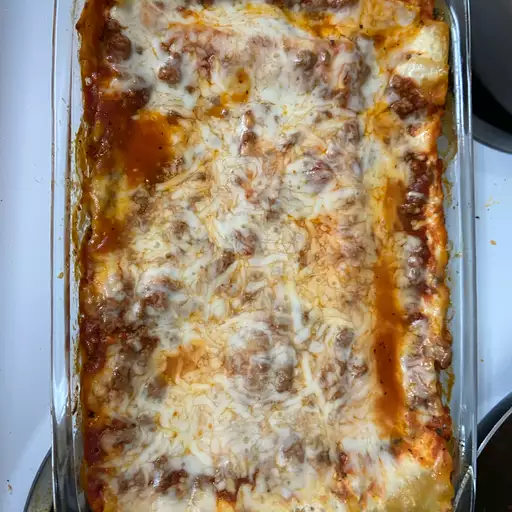

Simply Lasagna

Description
This simple lasagna recipe is made with ground beef, spaghetti sauce, uncooked lasagna
noodles, and three kinds of cheese. It's flavorful enough for a special dinner but
easy enough to make and serve any night of the week.
Ingredients
- 1 pound ground beef
- 1 (24 ounce) jar spaghetti sauce
- 1 cup water
- 1 (15 ounce) container POLLY-O Natural Part Skim Ricotta Cheese
- 2 1/2 cups KRAFT Shredded Low-Moisture Part-Skim Mozzarella Cheese, divided
- 1/2 cup KRAFT Grated Parmesan Cheese, divided
- 1/4 cup chopped fresh parsley
- 1 large egg, beaten
- 12 lasagna noodles, uncooked
- cooking spray
Steps
- Preheat the oven to 350 degrees F (175 degrees C).
- Cook and stir ground beef in a large skillet over medium-high heat until
browned and crumbly, 5 to 7 minutes. Turn off the heat; drain and discard grease.
- Stir spaghetti sauce into the skillet. Pour water into the empty sauce jar; cover,
shake well, then pour liquid into the skillet. Stir until beef and sauce are well combined.
- Mix ricotta cheese, 1 1/4 cups mozzarella, 1/4 cup Parmesan,
parsley, and egg together in a bowl until well blended.
- Spread 1 cup meat sauce over the bottom of a 9x13-inch baking dish. Top with 3
lasagna noodles, 1/3 of the ricotta mixture, and 1 cup meat sauce. Repeat layers twice
more with noodles, ricotta mixture, and meat sauce. Top with remaining noodles
and meat sauce, then sprinkle remaining mozzarella and Parmesan over top.
- Spray a sheet of aluminum foil with cooking spray. Place the sheet,
sprayed-side down, over the baking dish and seal tightly.